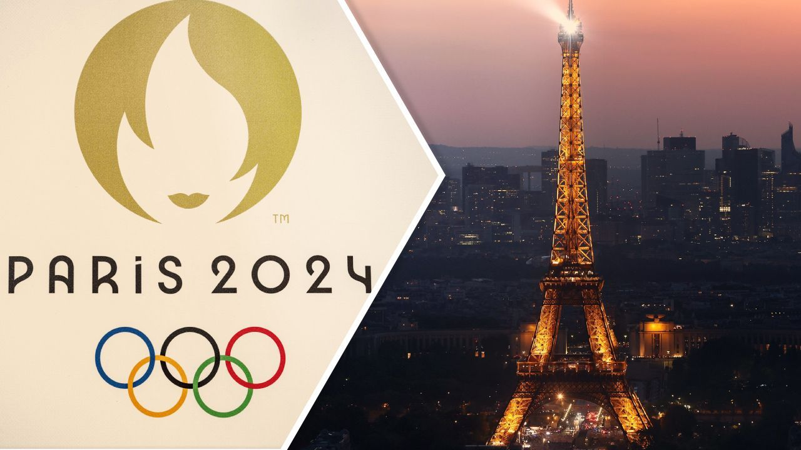

Olimpíadas de Paris 2024
Um evento global de celebração do esporte e da união entre nações
Resumo
As Olimpíadas de Paris 2024 serão um dos eventos esportivos mais esperados do ano, reunindo atletas de todo o mundo para competir em diversas modalidades esportivas. Esta será a terceira vez que Paris sediará os Jogos Olímpicos, tendo anteriormente sido anfitriã em 1900 e 1924.
O evento será realizado de 26 de julho a 11 de agosto de 2024, com competições espalhadas por vários locais icônicos da cidade, incluindo o Stade de France, a Torre Eiffel e o Château de Versailles. A cerimônia de abertura está planejada para ser um espetáculo inovador, destacando a rica história e cultura da França.

Esportes e Novidades
Os Jogos Olímpicos de Paris 2024 incluirão uma ampla gama de esportes, desde os tradicionais, como atletismo, natação e ginástica, até novos eventos, como breakdancing, que fará sua estreia olímpica. Além disso, haverá um foco significativo na sustentabilidade, com iniciativas para reduzir a pegada de carbono e promover práticas ecológicas.
Paris 2024 também promete inovações tecnológicas para melhorar a experiência dos espectadores, tanto nos locais de competição quanto para aqueles assistindo remotamente. A inclusão e diversidade serão pilares centrais, refletindo o espírito olímpico de unidade e igualdade.
As Olimpíadas são um evento muito importante na história do esporte mundial. Para mais informações, visite o site oficial das Olimpíadas.